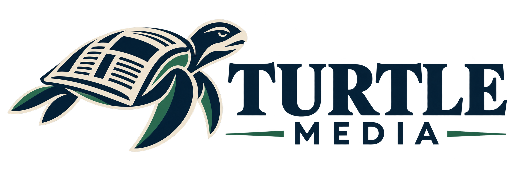

AVONDEDITIE$2.50

TURTLE MEDIA
Altijd boven op het nieuws
BREAKING — VOLG ONS VOOR LIVE UPDATES
STADSNIEUWS
NIEUWE ONTWIKKELINGEN BRENGEN DE STAD IN BEWEGING
Bewoners reageren enthousiast op de plannen die vandaag zijn gepresenteerd.
Voeg een hoofdfoto toe
De stad maakt zich op voor een nieuw hoofdstuk.